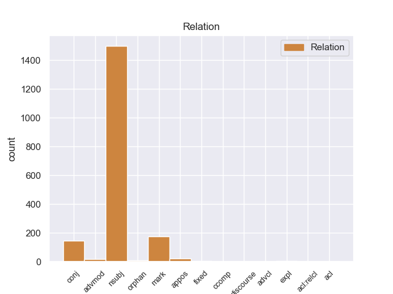
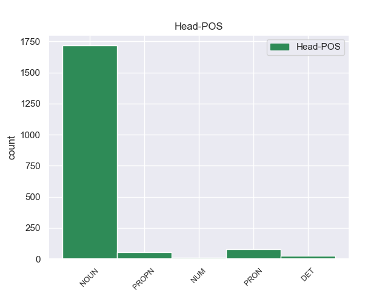
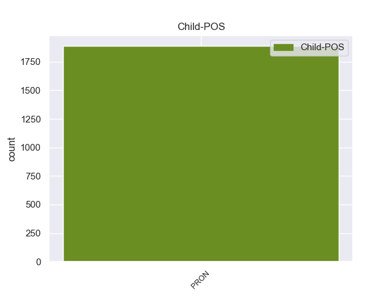

Distribution of features within this leaf



Agreement Rules sorted by frequency.
- When the dependent token is the nominal subject(nsubj) of the head token, and the head token is NOUN and the dependent token is PRON.
1 Он он PRON _ Case=Nom|Gender=Masc|Number=Sing|Person=3 5 nsubj 5:nsubj _
2 был _ _ _ _ 0 _ _ _
3 глупым _ _ _ _ 0 _ _ _
4 неуклюжим _ _ _ _ 0 _ _ _
5 малолетком малолеток NOUN _ Animacy=Anim|Case=Ins|Gender=Masc|Number=Sing 0 _ _ _
6 , _ _ _ _ 0 _ _ _
7 а _ _ _ _ 0 _ _ _
8 бабочка _ _ _ _ 0 _ _ _
9 - _ _ _ _ 0 _ _ _
10 зрелой _ _ _ _ 0 _ _ _
11 красавицей _ _ _ _ 0 _ _ _
12 во _ _ _ _ 0 _ _ _
13 всеоружии _ _ _ _ 0 _ _ _
14 ума _ _ _ _ 0 _ _ _
15 и _ _ _ _ 0 _ _ _
16 опыта _ _ _ _ 0 _ _ _
17 , _ _ _ _ 0 _ _ _
18 она _ _ _ _ 0 _ _ _
19 легко _ _ _ _ 0 _ _ _
20 и _ _ _ _ 0 _ _ _
21 грациозно _ _ _ _ 0 _ _ _
22 выпорхнула _ _ _ _ 0 _ _ _
23 из-под _ _ _ _ 0 _ _ _
24 маленькой _ _ _ _ 0 _ _ _
25 ладони _ _ _ _ 0 _ _ _
26 . _ _ _ _ 0 _ _ _
1 Ссылаясь _ _ _ _ 0 _ _ _
2 на _ _ _ _ 0 _ _ _
3 западные _ _ _ _ 0 _ _ _
4 и _ _ _ _ 0 _ _ _
5 русские _ _ _ _ 0 _ _ _
6 источники _ _ _ _ 0 _ _ _
7 , _ _ _ _ 0 _ _ _
8 Матфей _ _ _ _ 0 _ _ _
9 Стрийковский _ _ _ _ 0 _ _ _
10 в _ _ _ _ 0 _ _ _
11 своей _ _ _ _ 0 _ _ _
12 " _ _ _ _ 0 _ _ _
13 Хронике _ _ _ _ 0 _ _ _
14 " _ _ _ _ 0 _ _ _
15 пишет _ _ _ _ 0 _ _ _
16 , _ _ _ _ 0 _ _ _
17 что _ _ _ _ 0 _ _ _
18 " _ _ _ _ 0 _ _ _
19 с _ _ _ _ 0 _ _ _
20 этого _ _ _ _ 0 _ _ _
21 времени _ _ _ _ 0 _ _ _
22 ( _ _ _ _ 0 _ _ _
23 то то PRON _ Animacy=Inan|Case=Nom|Gender=Neut|Number=Sing 26 mark 26:mark _
24 есть _ _ _ _ 0 _ _ _
25 после _ _ _ _ 0 _ _ _
26 крещения крещение NOUN _ Animacy=Inan|Case=Gen|Gender=Neut|Number=Sing 0 _ _ _
27 Руси _ _ _ _ 0 _ _ _
28 ) _ _ _ _ 0 _ _ _
29 все _ _ _ _ 0 _ _ _
30 русские _ _ _ _ 0 _ _ _
31 народы _ _ _ _ 0 _ _ _
32 Белой _ _ _ _ 0 _ _ _
33 , _ _ _ _ 0 _ _ _
34 Восточной _ _ _ _ 0 _ _ _
35 , _ _ _ _ 0 _ _ _
36 Северной _ _ _ _ 0 _ _ _
37 и _ _ _ _ 0 _ _ _
38 на _ _ _ _ 0 _ _ _
39 Юге _ _ _ _ 0 _ _ _
40 расположенной _ _ _ _ 0 _ _ _
41 Руси _ _ _ _ 0 _ _ _
42 , _ _ _ _ 0 _ _ _
43 постоянно _ _ _ _ 0 _ _ _
44 и _ _ _ _ 0 _ _ _
45 твердо _ _ _ _ 0 _ _ _
46 пребывают _ _ _ _ 0 _ _ _
47 в _ _ _ _ 0 _ _ _
48 вере _ _ _ _ 0 _ _ _
49 христианской _ _ _ _ 0 _ _ _
50 за _ _ _ _ 0 _ _ _
51 обрядом _ _ _ _ 0 _ _ _
52 и _ _ _ _ 0 _ _ _
53 обычаями _ _ _ _ 0 _ _ _
54 греческими _ _ _ _ 0 _ _ _
55 , _ _ _ _ 0 _ _ _
56 под _ _ _ _ 0 _ _ _
57 главенством _ _ _ _ 0 _ _ _
58 Константинопольского _ _ _ _ 0 _ _ _
59 патриарха _ _ _ _ 0 _ _ _
60 " _ _ _ _ 0 _ _ _
61 . _ _ _ _ 0 _ _ _
1 Я _ _ _ _ 0 _ _ _
2 сказал _ _ _ _ 0 _ _ _
3 бы _ _ _ _ 0 _ _ _
4 им _ _ _ _ 0 _ _ _
5 , _ _ _ _ 0 _ _ _
6 что _ _ _ _ 0 _ _ _
7 это _ _ _ _ 0 _ _ _
8 папина _ _ _ _ 0 _ _ _
9 знакомая знакомая NOUN _ Animacy=Anim|Case=Nom|Gender=Fem|Number=Sing 0 _ _ _
10 и _ _ _ _ 0 _ _ _
11 моя _ _ _ _ 0 _ _ _
12 знакомая _ _ _ _ 0 _ _ _
13 тоже _ _ _ _ 0 _ _ _
14 ; _ _ _ _ 0 _ _ _
15 что _ _ _ _ 0 _ _ _
16 у _ _ _ _ 0 _ _ _
17 нее _ _ _ _ 0 _ _ _
18 негромкий _ _ _ _ 0 _ _ _
19 голос _ _ _ _ 0 _ _ _
20 и _ _ _ _ 0 _ _ _
21 тихий _ _ _ _ 0 _ _ _
22 , _ _ _ _ 0 _ _ _
23 долгий _ _ _ _ 0 _ _ _
24 смех _ _ _ _ 0 _ _ _
25 ; _ _ _ _ 0 _ _ _
26 что _ _ _ _ 0 _ _ _
27 у _ _ _ _ 0 _ _ _
28 нее она PRON _ Case=Gen|Gender=Fem|Number=Sing|Person=3 9 conj 9:conj _
29 теплые _ _ _ _ 0 _ _ _
30 длинные _ _ _ _ 0 _ _ _
31 пальцы _ _ _ _ 0 _ _ _
32 и _ _ _ _ 0 _ _ _
33 когда _ _ _ _ 0 _ _ _
34 она _ _ _ _ 0 _ _ _
35 осторожно _ _ _ _ 0 _ _ _
36 запускает _ _ _ _ 0 _ _ _
37 их _ _ _ _ 0 _ _ _
38 в _ _ _ _ 0 _ _ _
39 волосы _ _ _ _ 0 _ _ _
40 человеку _ _ _ _ 0 _ _ _
41 , _ _ _ _ 0 _ _ _
42 то _ _ _ _ 0 _ _ _
43 человеку _ _ _ _ 0 _ _ _
44 хочется _ _ _ _ 0 _ _ _
45 и _ _ _ _ 0 _ _ _
46 плакать _ _ _ _ 0 _ _ _
47 , _ _ _ _ 0 _ _ _
48 и _ _ _ _ 0 _ _ _
49 смеяться _ _ _ _ 0 _ _ _
50 одновременно _ _ _ _ 0 _ _ _
51 . _ _ _ _ 0 _ _ _
1 Не _ _ _ _ 0 _ _ _
2 только _ _ _ _ 0 _ _ _
3 то то PRON _ Animacy=Inan|Case=Nom|Gender=Neut|Number=Sing 0 _ _ _
4 , _ _ _ _ 0 _ _ _
5 что _ _ _ _ 0 _ _ _
6 летает _ _ _ _ 0 _ _ _
7 , _ _ _ _ 0 _ _ _
8 но _ _ _ _ 0 _ _ _
9 и _ _ _ _ 0 _ _ _
10 все все PRON _ Animacy=Inan|Case=Nom|Gender=Neut|Number=Sing 3 conj 3:conj SpaceAfter=No
11 , _ _ _ _ 0 _ _ _
12 что _ _ _ _ 0 _ _ _
13 движется _ _ _ _ 0 _ _ _
14 , _ _ _ _ 0 _ _ _
15 должно _ _ _ _ 0 _ _ _
16 быть _ _ _ _ 0 _ _ _
17 легким _ _ _ _ 0 _ _ _
18 , _ _ _ _ 0 _ _ _
19 нержавеющим _ _ _ _ 0 _ _ _
20 , _ _ _ _ 0 _ _ _
21 экономичным _ _ _ _ 0 _ _ _
22 и _ _ _ _ 0 _ _ _
23 обходиться _ _ _ _ 0 _ _ _
24 без _ _ _ _ 0 _ _ _
25 ремонта _ _ _ _ 0 _ _ _
26 тысячи _ _ _ _ 0 _ _ _
27 и _ _ _ _ 0 _ _ _
28 десятки _ _ _ _ 0 _ _ _
29 тысяч _ _ _ _ 0 _ _ _
30 часов _ _ _ _ 0 _ _ _
31 . _ _ _ _ 0 _ _ _
1 Но _ _ _ _ 0 _ _ _
2 это это PRON _ Animacy=Inan|Case=Nom|Gender=Neut|Number=Sing 5 nsubj 5:nsubj _
3 еще _ _ _ _ 0 _ _ _
4 не _ _ _ _ 0 _ _ _
5 все все PRON _ Animacy=Inan|Case=Nom|Gender=Neut|Number=Sing 0 _ _ _
6 - _ _ _ _ 0 _ _ _
7 морская _ _ _ _ 0 _ _ _
8 вода _ _ _ _ 0 _ _ _
9 содержит _ _ _ _ 0 _ _ _
10 практически _ _ _ _ 0 _ _ _
11 неисчерпаемые _ _ _ _ 0 _ _ _
12 запасы _ _ _ _ 0 _ _ _
13 редких _ _ _ _ 0 _ _ _
14 металлов _ _ _ _ 0 _ _ _
15 . _ _ _ _ 0 _ _ _
1 А _ _ _ _ 0 _ _ _
2 ответ ответ NOUN _ Animacy=Inan|Case=Nom|Gender=Masc|Number=Sing 0 _ _ _
3 - _ _ _ _ 0 _ _ _
4 вот _ _ _ _ 0 _ _ _
5 он он PRON _ Case=Nom|Gender=Masc|Number=Sing|Person=3 2 appos 2:appos SpaceAfter=No
6 : _ _ _ _ 0 _ _ _
7 все _ _ _ _ 0 _ _ _
8 прежние _ _ _ _ 0 _ _ _
9 попытки _ _ _ _ 0 _ _ _
10 реформ _ _ _ _ 0 _ _ _
11 не _ _ _ _ 0 _ _ _
12 принесли _ _ _ _ 0 _ _ _
13 должного _ _ _ _ 0 _ _ _
14 результата _ _ _ _ 0 _ _ _
15 , _ _ _ _ 0 _ _ _
16 потому _ _ _ _ 0 _ _ _
17 что _ _ _ _ 0 _ _ _
18 не _ _ _ _ 0 _ _ _
19 опирались _ _ _ _ 0 _ _ _
20 на _ _ _ _ 0 _ _ _
21 широкое _ _ _ _ 0 _ _ _
22 развертывание _ _ _ _ 0 _ _ _
23 процессов _ _ _ _ 0 _ _ _
24 демократизации _ _ _ _ 0 _ _ _
25 . _ _ _ _ 0 _ _ _
1 В _ _ _ _ 0 _ _ _
2 моей _ _ _ _ 0 _ _ _
3 жизни _ _ _ _ 0 _ _ _
4 это это PRON _ Animacy=Inan|Case=Nom|Gender=Neut|Number=Sing 6 nsubj 6:nsubj _
5 было _ _ _ _ 0 _ _ _
6 одним один DET _ Case=Ins|Degree=Pos|Gender=Neut|Number=Sing 0 _ _ _
7 из _ _ _ _ 0 _ _ _
8 самых _ _ _ _ 0 _ _ _
9 важных _ _ _ _ 0 _ _ _
10 событий _ _ _ _ 0 _ _ _
11 , _ _ _ _ 0 _ _ _
12 куда _ _ _ _ 0 _ _ _
13 важнее _ _ _ _ 0 _ _ _
14 первой _ _ _ _ 0 _ _ _
15 близости _ _ _ _ 0 _ _ _
16 с _ _ _ _ 0 _ _ _
17 женщиной _ _ _ _ 0 _ _ _
18 , _ _ _ _ 0 _ _ _
19 первого _ _ _ _ 0 _ _ _
20 выстрела _ _ _ _ 0 _ _ _
21 , _ _ _ _ 0 _ _ _
22 направленного _ _ _ _ 0 _ _ _
23 в _ _ _ _ 0 _ _ _
24 меня _ _ _ _ 0 _ _ _
25 , _ _ _ _ 0 _ _ _
26 важнее _ _ _ _ 0 _ _ _
27 всех _ _ _ _ 0 _ _ _
28 книжных _ _ _ _ 0 _ _ _
29 открытий _ _ _ _ 0 _ _ _
30 . _ _ _ _ 0 _ _ _
1 Запись _ _ _ _ 0 _ _ _
2 ток-шоу _ _ _ _ 0 _ _ _
3 длится _ _ _ _ 0 _ _ _
4 45 _ _ _ _ 0 _ _ _
5 минут _ _ _ _ 0 _ _ _
6 , _ _ _ _ 0 _ _ _
7 из _ _ _ _ 0 _ _ _
8 них _ _ _ _ 0 _ _ _
9 Илона _ _ _ _ 0 _ _ _
10 сумела _ _ _ _ 0 _ _ _
11 без _ _ _ _ 0 _ _ _
12 денег _ _ _ _ 0 _ _ _
13 ( _ _ _ _ 0 _ _ _
14 бюджет _ _ _ _ 0 _ _ _
15 фильма _ _ _ _ 0 _ _ _
16 был _ _ _ _ 0 _ _ _
17 урезан _ _ _ _ 0 _ _ _
18 более _ _ _ _ 0 _ _ _
19 чем _ _ _ _ 0 _ _ _
20 вдвое _ _ _ _ 0 _ _ _
21 ) _ _ _ _ 0 _ _ _
22 взять _ _ _ _ 0 _ _ _
23 17 _ _ _ _ 0 _ _ _
24 , _ _ _ _ 0 _ _ _
25 и _ _ _ _ 0 _ _ _
26 это _ _ _ _ 0 _ _ _
27 те _ _ _ _ 0 _ _ _
28 редкие _ _ _ _ 0 _ _ _
29 кадры _ _ _ _ 0 _ _ _
30 , _ _ _ _ 0 _ _ _
31 где _ _ _ _ 0 _ _ _
32 говорит _ _ _ _ 0 _ _ _
33 сам _ _ _ _ 0 _ _ _
34 Бауэр _ _ _ _ 0 _ _ _
35 , _ _ _ _ 0 _ _ _
36 а _ _ _ _ 0 _ _ _
37 не _ _ _ _ 0 _ _ _
38 его _ _ _ _ 0 _ _ _
When the dependent token is the nominal subject(nsubj) of the head token, and the head token is PROPN and the dependent token is PRON.
1 А _ _ _ _ 0 _ _ _
2 он он PRON _ Case=Nom|Gender=Masc|Number=Sing|Person=3 7 nsubj 7:nsubj _
3 - _ _ _ _ 0 _ _ _
4 тот _ _ _ _ 0 _ _ _
5 самый _ _ _ _ 0 _ _ _
6 знаменитый _ _ _ _ 0 _ _ _
7 Потапов Потапов PROPN _ Animacy=Anim|Case=Nom|Gender=Masc|Number=Sing 0 _ _ _
8 , _ _ _ _ 0 _ _ _
9 который _ _ _ _ 0 _ _ _
10 расставил _ _ _ _ 0 _ _ _
11 снегозащитные _ _ _ _ 0 _ _ _
12 щиты _ _ _ _ 0 _ _ _
13 вокруг _ _ _ _ 0 _ _ _
14 улиц _ _ _ _ 0 _ _ _
15 Норильска _ _ _ _ 0 _ _ _
16 , _ _ _ _ 0 _ _ _
17 промышленных _ _ _ _ 0 _ _ _
18 объектов _ _ _ _ 0 _ _ _
19 , _ _ _ _ 0 _ _ _
20 каким-то _ _ _ _ 0 _ _ _
21 образом _ _ _ _ 0 _ _ _
22 рассчитав _ _ _ _ 0 _ _ _
23 розу _ _ _ _ 0 _ _ _
24 ветров _ _ _ _ 0 _ _ _
25 , _ _ _ _ 0 _ _ _
26 их _ _ _ _ 0 _ _ _
27 наклон _ _ _ _ 0 _ _ _
28 под _ _ _ _ 0 _ _ _
29 разными _ _ _ _ 0 _ _ _
30 углами _ _ _ _ 0 _ _ _
31 и _ _ _ _ 0 _ _ _
32 т. _ _ _ _ 0 _ _ _
33 д _ _ _ _ 0 _ _ _
34 . _ _ _ _ 0 _ _ _
When the dependent token is the nominal subject(nsubj) of the head token, and the head token is NUM and the dependent token is PRON.
1 - _ _ _ _ 0 _ _ _
2 В _ _ _ _ 0 _ _ _
3 раздевалке _ _ _ _ 0 _ _ _
4 он он PRON _ Case=Nom|Gender=Masc|Number=Sing|Person=3 5 nsubj 5:nsubj _
5 один один NUM _ Case=Nom|Gender=Masc 0 _ _ _
6 из _ _ _ _ 0 _ _ _
7 непререкаемых _ _ _ _ 0 _ _ _
8 авторитетов _ _ _ _ 0 _ _ _
9 , _ _ _ _ 0 _ _ _
10 - _ _ _ _ 0 _ _ _
11 говорит _ _ _ _ 0 _ _ _
12 Джэмми _ _ _ _ 0 _ _ _
13 Лангенбрюннер _ _ _ _ 0 _ _ _
14 в _ _ _ _ 0 _ _ _
15 своём _ _ _ _ 0 _ _ _
16 интервью _ _ _ _ 0 _ _ _
17 местной _ _ _ _ 0 _ _ _
18 Fort _ _ _ _ 0 _ _ _
19 Worth _ _ _ _ 0 _ _ _
20 Star _ _ _ _ 0 _ _ _
21 - _ _ _ _ 0 _ _ _
22 Telegram _ _ _ _ 0 _ _ _
23 . _ _ _ _ 0 _ _ _
When the dependent token is the marker(mark) of the head token, and the head token is PRON and the dependent token is PRON.
1 Наука _ _ _ _ 0 _ _ _
2 стала _ _ _ _ 0 _ _ _
3 двигателем _ _ _ _ 0 _ _ _
4 технического _ _ _ _ 0 _ _ _
5 прогресса _ _ _ _ 0 _ _ _
6 , _ _ _ _ 0 _ _ _
7 впечатляющие _ _ _ _ 0 _ _ _
8 достижения _ _ _ _ 0 _ _ _
9 которого _ _ _ _ 0 _ _ _
10 , _ _ _ _ 0 _ _ _
11 выраженные _ _ _ _ 0 _ _ _
12 в _ _ _ _ 0 _ _ _
13 конечном _ _ _ _ 0 _ _ _
14 счете _ _ _ _ 0 _ _ _
15 деньгами _ _ _ _ 0 _ _ _
16 , _ _ _ _ 0 _ _ _
17 оружием _ _ _ _ 0 _ _ _
18 и _ _ _ _ 0 _ _ _
19 отчасти _ _ _ _ 0 _ _ _
20 комфортом _ _ _ _ 0 _ _ _
21 ( _ _ _ _ 0 _ _ _
22 то то PRON _ Animacy=Inan|Case=Nom|Gender=Neut|Number=Sing 25 mark 25:mark _
23 есть _ _ _ _ 0 _ _ _
24 всем _ _ _ _ 0 _ _ _
25 тем то PRON _ Animacy=Inan|Case=Ins|Gender=Neut|Number=Sing 0 _ _ _
26 , _ _ _ _ 0 _ _ _
27 что _ _ _ _ 0 _ _ _
28 в _ _ _ _ 0 _ _ _
29 первую _ _ _ _ 0 _ _ _
30 очередь _ _ _ _ 0 _ _ _
31 интересует _ _ _ _ 0 _ _ _
32 финансирующих _ _ _ _ 0 _ _ _
33 науку _ _ _ _ 0 _ _ _
34 ) _ _ _ _ 0 _ _ _
35 , _ _ _ _ 0 _ _ _
36 резко _ _ _ _ 0 _ _ _
37 укрепили _ _ _ _ 0 _ _ _
38 доверие _ _ _ _ 0 _ _ _
39 к _ _ _ _ 0 _ _ _
40 новой _ _ _ _ 0 _ _ _
41 методологии _ _ _ _ 0 _ _ _
42 познания _ _ _ _ 0 _ _ _
43 . _ _ _ _ 0 _ _ _
When the dependent token is the adverbial modifier(advmod) of the head token, and the head token is NOUN and the dependent token is PRON.
1 Рост _ _ _ _ 0 _ _ _
2 благосостояния _ _ _ _ 0 _ _ _
3 людей _ _ _ _ 0 _ _ _
4 в _ _ _ _ 0 _ _ _
5 огромных _ _ _ _ 0 _ _ _
6 регионах _ _ _ _ 0 _ _ _
7 уменьшает _ _ _ _ 0 _ _ _
8 напряженность _ _ _ _ 0 _ _ _
9 по _ _ _ _ 0 _ _ _
10 вертикали _ _ _ _ 0 _ _ _
11 Север _ _ _ _ 0 _ _ _
12 - _ _ _ _ 0 _ _ _
13 Юг _ _ _ _ 0 _ _ _
14 , _ _ _ _ 0 _ _ _
15 которая _ _ _ _ 0 _ _ _
16 еще _ _ _ _ 0 _ _ _
17 два _ _ _ _ 0 _ _ _
18 десятилетия десятилетие NOUN _ Animacy=Inan|Case=Gen|Gender=Neut|Number=Sing 0 _ _ _
19 тому то PRON _ Animacy=Inan|Case=Dat|Gender=Neut|Number=Sing 18 advmod 18:advmod _
20 назад _ _ _ _ 0 _ _ _
21 казалась _ _ _ _ 0 _ _ _
22 главной _ _ _ _ 0 _ _ _
23 угрозой _ _ _ _ 0 _ _ _
24 для _ _ _ _ 0 _ _ _
25 будущего _ _ _ _ 0 _ _ _
26 . _ _ _ _ 0 _ _ _
When the dependent token is the adverbial clause modifier(advcl) of the head token, and the head token is NOUN and the dependent token is PRON.
1 Я _ _ _ _ 0 _ _ _
2 думаю _ _ _ _ 0 _ _ _
3 , _ _ _ _ 0 _ _ _
4 родись _ _ _ _ 0 _ _ _
5 Перельман _ _ _ _ 0 _ _ _
6 на _ _ _ _ 0 _ _ _
7 10 _ _ _ _ 0 _ _ _
8 лет _ _ _ _ 0 _ _ _
9 раньше _ _ _ _ 0 _ _ _
10 или _ _ _ _ 0 _ _ _
11 позже _ _ _ _ 0 _ _ _
12 , _ _ _ _ 0 _ _ _
13 в _ _ _ _ 0 _ _ _
14 России _ _ _ _ 0 _ _ _
15 или _ _ _ _ 0 _ _ _
16 в _ _ _ _ 0 _ _ _
17 Америке _ _ _ _ 0 _ _ _
18 - _ _ _ _ 0 _ _ _
19 если _ _ _ _ 0 _ _ _
20 бы _ _ _ _ 0 _ _ _
21 это _ _ _ _ 0 _ _ _
22 был _ _ _ _ 0 _ _ _
23 именно _ _ _ _ 0 _ _ _
24 он он PRON _ Case=Nom|Gender=Masc|Number=Sing|Person=3 31 advcl 31:advcl SpaceAfter=No
25 , _ _ _ _ 0 _ _ _
26 - _ _ _ _ 0 _ _ _
27 всё _ _ _ _ 0 _ _ _
28 было _ _ _ _ 0 _ _ _
29 бы _ _ _ _ 0 _ _ _
30 в _ _ _ _ 0 _ _ _
31 порядке порядок NOUN _ Animacy=Inan|Case=Loc|Gender=Masc|Number=Sing 0 _ _ _
32 . _ _ _ _ 0 _ _ _
When the dependent token is the fixed multiword expression(fixed) of the head token, and the head token is DET and the dependent token is PRON.
1 В _ _ _ _ 0 _ _ _
2 них _ _ _ _ 0 _ _ _
3 предусмотрено _ _ _ _ 0 _ _ _
4 обеспечение _ _ _ _ 0 _ _ _
5 прав _ _ _ _ 0 _ _ _
6 личности _ _ _ _ 0 _ _ _
7 без _ _ _ _ 0 _ _ _
8 какого какой DET _ Case=Gen|Gender=Neut|Number=Sing 0 _ _ _
9 бы _ _ _ _ 0 _ _ _
10 то то PRON _ Animacy=Inan|Case=Nom|Gender=Neut|Number=Sing 8 fixed 8:fixed _
11 ни _ _ _ _ 0 _ _ _
12 было _ _ _ _ 0 _ _ _
13 различия _ _ _ _ 0 _ _ _
14 в _ _ _ _ 0 _ _ _
15 отношении _ _ _ _ 0 _ _ _
16 языка _ _ _ _ 0 _ _ _
17 . _ _ _ _ 0 _ _ _
When the dependent token is the expletive(expl) of the head token, and the head token is NOUN and the dependent token is PRON.
1 Но _ _ _ _ 0 _ _ _
2 уж _ _ _ _ 0 _ _ _
3 чего _ _ _ _ 0 _ _ _
4 точно _ _ _ _ 0 _ _ _
5 удавалось _ _ _ _ 0 _ _ _
6 добиться _ _ _ _ 0 _ _ _
7 , _ _ _ _ 0 _ _ _
8 так _ _ _ _ 0 _ _ _
9 это это PRON _ Animacy=Inan|Case=Nom|Gender=Neut|Number=Sing 10 expl 10:expl _
10 переключения переключение NOUN _ Animacy=Inan|Case=Gen|Gender=Neut|Number=Sing 0 _ _ _
11 коррупционных _ _ _ _ 0 _ _ _
12 потоков _ _ _ _ 0 _ _ _
13 на _ _ _ _ 0 _ _ _
14 более _ _ _ _ 0 _ _ _
15 высокий _ _ _ _ 0 _ _ _
16 уровень _ _ _ _ 0 _ _ _
17 власти _ _ _ _ 0 _ _ _
18 . _ _ _ _ 0 _ _ _
When the dependent token is the adverbial modifier(advmod) of the head token, and the head token is PRON and the dependent token is PRON.
1 Ну _ _ _ _ 0 _ _ _
2 как _ _ _ _ 0 _ _ _
3 это это PRON _ Animacy=Inan|Case=Nom|Gender=Neut|Number=Sing 0 _ _ _
4 : _ _ _ _ 0 _ _ _
5 все все PRON _ Animacy=Inan|Case=Nom|Gender=Neut|Number=Sing 3 advmod 3:advmod _
6 равно _ _ _ _ 0 _ _ _
7 ? _ _ _ _ 0 _ _ _
When the dependent token is the appositional modifier(appos) of the head token, and the head token is PRON and the dependent token is PRON.
1 Глупая _ _ _ _ 0 _ _ _
2 женщина _ _ _ _ 0 _ _ _
3 , _ _ _ _ 0 _ _ _
4 она _ _ _ _ 0 _ _ _
5 тоже _ _ _ _ 0 _ _ _
6 бредет _ _ _ _ 0 _ _ _
7 наугад _ _ _ _ 0 _ _ _
8 , _ _ _ _ 0 _ _ _
9 вытянув _ _ _ _ 0 _ _ _
10 руки _ _ _ _ 0 _ _ _
11 , _ _ _ _ 0 _ _ _
12 обшаривая _ _ _ _ 0 _ _ _
13 выступы _ _ _ _ 0 _ _ _
14 и _ _ _ _ 0 _ _ _
15 расселины _ _ _ _ 0 _ _ _
16 , _ _ _ _ 0 _ _ _
17 спотыкаясь _ _ _ _ 0 _ _ _
18 в _ _ _ _ 0 _ _ _
19 тумане _ _ _ _ 0 _ _ _
20 , _ _ _ _ 0 _ _ _
21 она _ _ _ _ 0 _ _ _
22 вздрагивает _ _ _ _ 0 _ _ _
23 и _ _ _ _ 0 _ _ _
24 ежится _ _ _ _ 0 _ _ _
25 во _ _ _ _ 0 _ _ _
26 сне _ _ _ _ 0 _ _ _
27 , _ _ _ _ 0 _ _ _
28 она _ _ _ _ 0 _ _ _
29 тянется _ _ _ _ 0 _ _ _
30 к _ _ _ _ 0 _ _ _
31 блуждающим _ _ _ _ 0 _ _ _
32 огням _ _ _ _ 0 _ _ _
33 , _ _ _ _ 0 _ _ _
34 ловит _ _ _ _ 0 _ _ _
35 неловкими _ _ _ _ 0 _ _ _
36 пальчиками _ _ _ _ 0 _ _ _
37 отражения _ _ _ _ 0 _ _ _
38 свечей _ _ _ _ 0 _ _ _
39 , _ _ _ _ 0 _ _ _
40 хватает _ _ _ _ 0 _ _ _
41 круги _ _ _ _ 0 _ _ _
42 на _ _ _ _ 0 _ _ _
43 воде _ _ _ _ 0 _ _ _
44 , _ _ _ _ 0 _ _ _
45 бросается _ _ _ _ 0 _ _ _
46 за _ _ _ _ 0 _ _ _
47 тенью _ _ _ _ 0 _ _ _
48 дыма _ _ _ _ 0 _ _ _
49 ; _ _ _ _ 0 _ _ _
50 она _ _ _ _ 0 _ _ _
51 склоняет _ _ _ _ 0 _ _ _
52 голову _ _ _ _ 0 _ _ _
53 на _ _ _ _ 0 _ _ _
54 плечо _ _ _ _ 0 _ _ _
55 , _ _ _ _ 0 _ _ _
56 слушает _ _ _ _ 0 _ _ _
57 шуршание _ _ _ _ 0 _ _ _
58 ветра _ _ _ _ 0 _ _ _
59 и _ _ _ _ 0 _ _ _
60 пыли _ _ _ _ 0 _ _ _
61 , _ _ _ _ 0 _ _ _
62 растерянно _ _ _ _ 0 _ _ _
63 улыбается _ _ _ _ 0 _ _ _
64 , _ _ _ _ 0 _ _ _
65 озирается _ _ _ _ 0 _ _ _
66 - _ _ _ _ 0 _ _ _
67 где _ _ _ _ 0 _ _ _
68 оно оно PRON _ Case=Nom|Gender=Neut|Number=Sing|Person=3 0 _ _ _
69 , _ _ _ _ 0 _ _ _
70 то то PRON _ Animacy=Inan|Case=Nom|Gender=Neut|Number=Sing 68 appos 68:appos SpaceAfter=No
71 , _ _ _ _ 0 _ _ _
72 что _ _ _ _ 0 _ _ _
73 сейчас _ _ _ _ 0 _ _ _
74 промелькнуло _ _ _ _ 0 _ _ _
75 ? _ _ _ _ 0 _ _ _
When the dependent token is the orphan(orphan) of the head token, and the head token is PROPN and the dependent token is PRON.
1 И _ _ _ _ 0 _ _ _
2 совсем _ _ _ _ 0 _ _ _
3 не _ _ _ _ 0 _ _ _
4 прав _ _ _ _ 0 _ _ _
5 Али _ _ _ _ 0 _ _ _
6 , _ _ _ _ 0 _ _ _
7 когда _ _ _ _ 0 _ _ _
8 для _ _ _ _ 0 _ _ _
9 доказательства _ _ _ _ 0 _ _ _
10 другого _ _ _ _ 0 _ _ _
11 тезиса _ _ _ _ 0 _ _ _
12 - _ _ _ _ 0 _ _ _
13 " _ _ _ _ 0 _ _ _
14 подавляющее _ _ _ _ 0 _ _ _
15 большинство _ _ _ _ 0 _ _ _
16 ( _ _ _ _ 0 _ _ _
17 немцев _ _ _ _ 0 _ _ _
18 ) _ _ _ _ 0 _ _ _
19 не _ _ _ _ 0 _ _ _
20 нуждалось _ _ _ _ 0 _ _ _
21 ни _ _ _ _ 0 _ _ _
22 в _ _ _ _ 0 _ _ _
23 каком _ _ _ _ 0 _ _ _
24 надзоре _ _ _ _ 0 _ _ _
25 " _ _ _ _ 0 _ _ _
26 - _ _ _ _ 0 _ _ _
27 приводит _ _ _ _ 0 _ _ _
28 сопоставление _ _ _ _ 0 _ _ _
29 : _ _ _ _ 0 _ _ _
30 в _ _ _ _ 0 _ _ _
31 ГДР _ _ _ _ 0 _ _ _
32 для _ _ _ _ 0 _ _ _
33 контроля _ _ _ _ 0 _ _ _
34 над _ _ _ _ 0 _ _ _
35 17 _ _ _ _ 0 _ _ _
36 миллионами _ _ _ _ 0 _ _ _
37 граждан _ _ _ _ 0 _ _ _
38 было _ _ _ _ 0 _ _ _
39 задействовано _ _ _ _ 0 _ _ _
40 190 _ _ _ _ 0 _ _ _
41 тысяч _ _ _ _ 0 _ _ _
42 штатных _ _ _ _ 0 _ _ _
43 и _ _ _ _ 0 _ _ _
44 столько _ _ _ _ 0 _ _ _
45 же _ _ _ _ 0 _ _ _
46 нештатных _ _ _ _ 0 _ _ _
47 агентов _ _ _ _ 0 _ _ _
48 " _ _ _ _ 0 _ _ _
49 Штази _ _ _ _ 0 _ _ _
50 " _ _ _ _ 0 _ _ _
51 , _ _ _ _ 0 _ _ _
52 а _ _ _ _ 0 _ _ _
53 гестапо _ _ _ _ 0 _ _ _
54 в _ _ _ _ 0 _ _ _
55 1937 _ _ _ _ 0 _ _ _
56 г. _ _ _ _ 0 _ _ _
57 насчитывало _ _ _ _ 0 _ _ _
58 лишь _ _ _ _ 0 _ _ _
59 7 _ _ _ _ 0 _ _ _
60 тысяч _ _ _ _ 0 _ _ _
61 сотрудников _ _ _ _ 0 _ _ _
62 , _ _ _ _ 0 _ _ _
63 включая _ _ _ _ 0 _ _ _
64 секретарш _ _ _ _ 0 _ _ _
65 и _ _ _ _ 0 _ _ _
66 хозяйственников _ _ _ _ 0 _ _ _
67 , _ _ _ _ 0 _ _ _
When the dependent token is the discourse element(discourse) of the head token, and the head token is NOUN and the dependent token is PRON.
1 Но _ _ _ _ 0 _ _ _
2 , _ _ _ _ 0 _ _ _
3 тем то PRON _ Animacy=Inan|Case=Ins|Gender=Neut|Number=Sing 9 discourse 9:discourse _
4 не _ _ _ _ 0 _ _ _
5 менее _ _ _ _ 0 _ _ _
6 , _ _ _ _ 0 _ _ _
7 сейчас _ _ _ _ 0 _ _ _
8 самое _ _ _ _ 0 _ _ _
9 время время NOUN _ Animacy=Inan|Case=Nom|Gender=Neut|Number=Sing 0 _ _ _
10 , _ _ _ _ 0 _ _ _
11 как _ _ _ _ 0 _ _ _
12 считают _ _ _ _ 0 _ _ _
13 специалисты _ _ _ _ 0 _ _ _
14 , _ _ _ _ 0 _ _ _
15 начинать _ _ _ _ 0 _ _ _
16 делать _ _ _ _ 0 _ _ _
17 долгосрочные _ _ _ _ 0 _ _ _
18 инвестиции _ _ _ _ 0 _ _ _
19 . _ _ _ _ 0 _ _ _
When the dependent token is the appositional modifier(appos) of the head token, and the head token is PROPN and the dependent token is PRON.
1 Касьянов Касьянов PROPN _ Animacy=Anim|Case=Nom|Gender=Masc|Number=Sing 0 _ _ _
2 , _ _ _ _ 0 _ _ _
3 даже _ _ _ _ 0 _ _ _
4 если _ _ _ _ 0 _ _ _
5 бы _ _ _ _ 0 _ _ _
6 ему _ _ _ _ 0 _ _ _
7 дали _ _ _ _ 0 _ _ _
8 возможность _ _ _ _ 0 _ _ _
9 свободно _ _ _ _ 0 _ _ _
10 выходить _ _ _ _ 0 _ _ _
11 в _ _ _ _ 0 _ _ _
12 эфир _ _ _ _ 0 _ _ _
13 и _ _ _ _ 0 _ _ _
14 дискутировать _ _ _ _ 0 _ _ _
15 , _ _ _ _ 0 _ _ _
16 вряд _ _ _ _ 0 _ _ _
17 ли _ _ _ _ 0 _ _ _
18 бы _ _ _ _ 0 _ _ _
19 он он PRON _ Case=Nom|Gender=Masc|Number=Sing|Person=3 1 appos 1:appos _
20 набрал _ _ _ _ 0 _ _ _
21 больше _ _ _ _ 0 _ _ _
22 семи _ _ _ _ 0 _ _ _
23 процентов _ _ _ _ 0 _ _ _
24 . _ _ _ _ 0 _ _ _
When the dependent token is the marker(mark) of the head token, and the head token is DET and the dependent token is PRON.
1 То то PRON _ Animacy=Inan|Case=Nom|Gender=Neut|Number=Sing 3 mark 3:mark _
2 есть _ _ _ _ 0 _ _ _
3 этим этот DET _ Case=Ins|Gender=Neut|Number=Sing 0 _ _ _
4 " _ _ _ _ 0 _ _ _
5 мы _ _ _ _ 0 _ _ _
6 " _ _ _ _ 0 _ _ _
7 он _ _ _ _ 0 _ _ _
8 причисляет _ _ _ _ 0 _ _ _
9 себя _ _ _ _ 0 _ _ _
10 к _ _ _ _ 0 _ _ _
11 когорте _ _ _ _ 0 _ _ _
12 людей _ _ _ _ 0 _ _ _
13 - _ _ _ _ 0 _ _ _
14 силовиков _ _ _ _ 0 _ _ _
15 , _ _ _ _ 0 _ _ _
16 которые _ _ _ _ 0 _ _ _
17 и _ _ _ _ 0 _ _ _
18 бегают _ _ _ _ 0 _ _ _
19 сейчас _ _ _ _ 0 _ _ _
20 по _ _ _ _ 0 _ _ _
21 НКО _ _ _ _ 0 _ _ _
22 . _ _ _ _ 0 _ _ _
When the dependent token is the conjunct(conj) of the head token, and the head token is PROPN and the dependent token is PRON.
1 Любой _ _ _ _ 0 _ _ _
2 истинный _ _ _ _ 0 _ _ _
3 патриот _ _ _ _ 0 _ _ _
4 желает _ _ _ _ 0 _ _ _
5 добра _ _ _ _ 0 _ _ _
6 и _ _ _ _ 0 _ _ _
7 процветания _ _ _ _ 0 _ _ _
8 своему _ _ _ _ 0 _ _ _
9 Отечеству _ _ _ _ 0 _ _ _
10 , _ _ _ _ 0 _ _ _
11 независимо _ _ _ _ 0 _ _ _
12 от _ _ _ _ 0 _ _ _
13 того _ _ _ _ 0 _ _ _
14 , _ _ _ _ 0 _ _ _
15 живет _ _ _ _ 0 _ _ _
16 ли _ _ _ _ 0 _ _ _
17 он _ _ _ _ 0 _ _ _
18 на _ _ _ _ 0 _ _ _
19 Родине Родина PROPN _ Animacy=Inan|Case=Loc|Gender=Fem|Number=Sing 0 _ _ _
20 или _ _ _ _ 0 _ _ _
21 вне _ _ _ _ 0 _ _ _
22 ее она PRON _ Case=Gen|Gender=Fem|Number=Sing|Person=3 19 conj 19:conj SpaceAfter=No
23 . _ _ _ _ 0 _ _ _
Disagree Examples:
1 - _ _ _ _ 0 _ _ _
2 Я _ _ _ _ 0 _ _ _
3 была _ _ _ _ 0 _ _ _
4 у _ _ _ _ 0 _ _ _
5 вас _ _ _ _ 0 _ _ _
6 неделю неделя NOUN _ Animacy=Inan|Case=Acc|Gender=Fem|Number=Sing 0 _ _ _
7 тому то PRON _ Animacy=Inan|Case=Dat|Gender=Neut|Number=Sing 6 advmod 6:advmod _
8 назад _ _ _ _ 0 _ _ _
9 по _ _ _ _ 0 _ _ _
10 вопросу _ _ _ _ 0 _ _ _
11 устройства _ _ _ _ 0 _ _ _
12 на _ _ _ _ 0 _ _ _
13 работу _ _ _ _ 0 _ _ _
14 . _ _ _ _ 0 _ _ _
1 Но _ _ _ _ 0 _ _ _
2 то то PRON _ Animacy=Inan|Case=Nom|Gender=Neut|Number=Sing 6 nsubj 6:nsubj _
3 было _ _ _ _ 0 _ _ _
4 в _ _ _ _ 0 _ _ _
5 древнем _ _ _ _ 0 _ _ _
6 Риме Рим PROPN _ Animacy=Inan|Case=Loc|Gender=Masc|Number=Sing 0 _ _ _
7 и _ _ _ _ 0 _ _ _
8 требования _ _ _ _ 0 _ _ _
9 тогда _ _ _ _ 0 _ _ _
10 были _ _ _ _ 0 _ _ _
11 совершенно _ _ _ _ 0 _ _ _
12 другие _ _ _ _ 0 _ _ _
13 . _ _ _ _ 0 _ _ _
1 - _ _ _ _ 0 _ _ _
2 У _ _ _ _ 0 _ _ _
1 На _ _ _ _ 0 _ _ _
2 этот _ _ _ _ 0 _ _ _
3 раз _ _ _ _ 0 _ _ _
4 она она PRON _ Case=Nom|Gender=Fem|Number=Sing|Person=3 8 nsubj 8:nsubj _
5 была _ _ _ _ 0 _ _ _
6 в _ _ _ _ 0 _ _ _
7 сильном _ _ _ _ 0 _ _ _
8 возбуждении возбуждение NOUN _ Animacy=Inan|Case=Loc|Gender=Neut|Number=Sing 0 _ _ _
9 и _ _ _ _ 0 _ _ _
10 мяла _ _ _ _ 0 _ _ _
11 в _ _ _ _ 0 _ _ _
12 кулаке _ _ _ _ 0 _ _ _
13 кружевной _ _ _ _ 0 _ _ _
14 платочек _ _ _ _ 0 _ _ _
15 . _ _ _ _ 0 _ _ _
1 В _ _ _ _ 0 _ _ _
2 той _ _ _ _ 0 _ _ _
3 стороне _ _ _ _ 0 _ _ _
4 , _ _ _ _ 0 _ _ _
5 куда _ _ _ _ 0 _ _ _
6 Званцев _ _ _ _ 0 _ _ _
7 вел _ _ _ _ 0 _ _ _
8 орудие _ _ _ _ 0 _ _ _
9 , _ _ _ _ 0 _ _ _
10 хлестали _ _ _ _ 0 _ _ _
11 уже _ _ _ _ 0 _ _ _
12 пулеметные _ _ _ _ 0 _ _ _
13 трассы _ _ _ _ 0 _ _ _
14 , _ _ _ _ 0 _ _ _
15 и _ _ _ _ 0 _ _ _
16 все все PRON _ Animacy=Inan|Case=Nom|Gender=Neut|Number=Sing 28 nsubj 28:nsubj _
17 там _ _ _ _ 0 _ _ _
18 было _ _ _ _ 0 _ _ _
19 в _ _ _ _ 0 _ _ _
20 этом _ _ _ _ 0 _ _ _
21 мгновенно _ _ _ _ 0 _ _ _
22 сверкающем _ _ _ _ 0 _ _ _
23 , _ _ _ _ 0 _ _ _
24 несущемся _ _ _ _ 0 _ _ _
25 отовсюду _ _ _ _ 0 _ _ _
26 , _ _ _ _ 0 _ _ _
27 стремительном _ _ _ _ 0 _ _ _
28 огне огонь NOUN _ Animacy=Inan|Case=Loc|Gender=Masc|Number=Sing 0 _ _ _
29 . _ _ _ _ 0 _ _ _